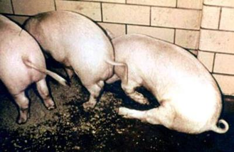

Specific and Management Diseases

{kind=link}
{kind=link}
In this section listed are the diseases that are to a large extent management and environment related, such as diarrhea, bloat, FMD, foot problems and mastitis. It contains also information of the disease Rinderpest, which has now been declared extinct in East Africa, so that in case it resurfaces, there will be at least reference material.
Also Nairobi sheep disease, PPR and Plant and other Poisoning are included here.
Introduction
In this section is listed the diseases that are to a large extent management and environment related, such as diarrhea, bloat, FMD, foot problems and mastitis, but also mention signs to look for the disease Rinderpest, which has now been declared extinct in East Africa, so that in case it resurfaces, there will be at least reference material.
Also Nairobi sheep disease, PPR and Plant and other Poisoning are included here.
Bloat
| Local names: Luo: ich-kuot / Embu: nunvita / Gabbra: furfur / Gikuyu: huhita / Kamba: kwimbanywa / Kipsigis: kowiren / Maasai: Embo'ngit, Ediis, empomgit / Maragoli: kuhaata, myika munda/ Meru: mpwna / Samburu: mberini / Somali: bakhakh, dunbudhyo, balao, baalallo, dhibir, dibiyio / Turkana: lotebwo, akitebukin, akiurur / Pokot: lesana / Other name: Ruminal Tympany |
| Cow with bloat |
| (c) W. Ayako, KARI Naivasha
|
| X-ray - dog with bloat |
| (c) Joel Mills, Wikipedia
|
How animals get bloat
- Animals eat too many legumes or too much fresh, lush grass (e.g. olenge grass (Luo))
- Animal eats too much grain (e.g. finger millet, Acacia pods)
- Animal eats cassava leaves or peels
- Something blocks the passage of food in the stomach or gullet
Types of bloat
Causes of Frothy Bloat
- The primary cause of frothy bloat appears to be a change in the composition of certain pasture plants, the change being one that facilitates the development of a stable foam that in turn prevents belching
- Frothy Bloat normally happens at the start of wet season when the diet of grazing animals abruptly changes from dry feeds to wet lush pastures that contains some legumes.
- Animals also get Frothy Bloat when they feed on ripe fruits or other feeds that ferment easily.
- Some poisonous plants can cause sudden and severe bloat.
- A sudden change in the type of food can also cause Frothy Bloat.
- Frothy bloat can also occur in feedlots with insufficient roughage, or food too finely ground. This leads to a shortage of rumen-stimulating roughage, and prevents the rumen's ability to move spontaneously and hinders belching and release of gas.
Signs of Bloat
- The left side of the abdomen behind the ribs becomes very distended and very tense, like a drum. Later the right side also becomes distended
- The animal stops eating
- The animal may grunt and have difficulty in breathing
- There may be mouth breathing
- The animal may stamp its feet on the ground
- Sometimes green froth comes out of the mouth and nose
- There may be extension of the tongue from the mouth
- Diarrhoea is common in cases of Frothy Bloat
- Animals may collapse and die after only an hour or so
- There is often frequent urination
Prevention - Control - Treatment
Prevention of bloat
Treatment of bloat
- Do not feed the animal for a few hours and make the animal move around (remember it can die within 1 hour if the bloat is severe)
- For less severe cases of frothy bloat, give 500 ml to large animals and 100ml to small animals of any edible vegetable oil, solid cooking oil, butter oil, ghee or milk orally (by mouth). Non-toxic mineral oils can also be used effectively.
- Severe bloat is an emergency and rapid action is required to save the animal's life. In life-threatening cases where the animal can not breathe, an emergency rumenotomy may be necessary. Puncture carefully the skin and the rumen of the animal on the left flunk to let the gas out. Use a knife or any sharp thing but the best instrument to use is the trochar and cannula. The hole should be made at a hands' width behind the last rib and a hand away from the edge of the backbone. Push hard because the skin is very tough. Gas and froth will come out when you make the hole. It helps to put a tube or cannula through the hole to keep the hole open. There will be an explosive release of gas and rumen contents. Remember that in severe cases if this is not done the animal will die. SO DO IT .
- Pour some vegetable oil into the rumen through the hole to help stop further gas or froth formation. Complications are rare. Call a veterinarian to attend to a punctured abdomen or a difficult case of bloat.
- Another aid is to tie a stick in the mouth to stimulate the flow of saliva, which is alkaline and helps to denature the foam.
- Forceful walking may help to coalesce the foam into larger bubbles and stimulate belching.
- Give bloat medicine such as the following: Stop Bloat, Bloat Guard or Birp once daily for 3 days
- In cases of Free Gas Bloat due to a foreign body lodged in the oesophagus, it may have to be dislodged by using a probang or stomach tube, for which the services of a veterinarian will be required.
Common traditional practice
- Gabbra: Mix 4 teaspoons of laundry detergent with 1 litre of milk. Drench 1 litre for an adult cow (0.5 litre for sheep and goats)
- Turkana: Mix 500 g Magadi soda with 1 litre of water. Stir well and drench adult cattle with the mixture. For calves, goats and sheep use 0.5 litre. For large camels give 2 litres.
- Luo: Mix 0.5 litre of paraffin oil with a handful of olulusia (Vernonia amygdalina) leaves and 2 spoons of salt. Drench with half this amount.
- Kamba: Mix a handful of wood ash with 1 soda bottle (300 ml) of water. Sieve and drench adult cattle with this amount. Use half the amount for calves, sheep and goats.
Bovine Viral Diarrhoea and Mucosal Disease Complex
Luo: diep nyaroya / Kikuyu: ruharo rwa kimira / Maasai: Iinkati /
Mode of spread
Transmission can occur after birth by contact with infected secretions and excretions shed by persistently infected animals. Needle transmission can occur. Pre-natal (transmission to the calf before birth) persistent infection develops when inactive virus is transmitted through the placenta during the first 4 months of foetal development. The calf is born infected and remains infected for life. Infection through the placenta later in gestation results in abortion, congenital malformations, or birth of normal calves that have antibody against BVDV, so the outcome of infection varies according to the stage of pregnancy when infection occurs.
- Up to 90 days of pregnancy
At this stage infected cows give birth to a calf with permanent infection of the disease and whose immune system does not recognize the virus as a foreign organism ("anti body negative calves"). Fifty percent of these calves develop clinical disease and die within the first two years Calves appear to be stunted, and prone to respiratory and intestine ailments. In the infected mother foetal death and irregular returns to service occur. - 90 to 180 days of pregnancy
Infection at this stage causes abortion or the birth of a congenitally deformed calf with perhaps eye and brain abnormalities or a persistently infected calf possibly with some antibody. - After 180 days of pregnancy
At this stage, the immune system of the foetus is fully developed and the immune system of the foetus detects and clears itself of infection. At birth such calves are normal and have antibodies against the disease. But abortion may still occur in the mother.
Whatever the stage of pregnancy the cow herself will often be only mildly affected - she may have a raised temperature and scour for a few days but only occasionally develops a severe illness. It is the persistentlyinfected calf which causes problems.
Signs of Bovine Viral diarrhea
- BVDV is immunosupressive and as as result an infected animal is much more susceptible to other infections such as those affecting the gut or lungs
- The virus attacks all the mucosal surfaces in the body causing inflammation and ulceration and it is the results of this which cause the symptoms seen.
- Erosions can occur throughout the intestinal tract, lesions are seen in the mouth, nose and muzzle, there is often foul smelling diarrhoea containing shreds of intestine, mucus and blood.
- Occasionally diarrhoea may be so severe as to appear like water or paralysis of the gut may occur with no sign of faecal material.
- Other signs which may occur include discharges from the nose, excessive tears and lameness due to eruptive lesions of the interdigital cleft and coronary band.
- Animals are reluctant to eat and there is drooling and even frothing from the mouth.
- High mortality with moderate morbidity (the ratio of sick to well animals) is to be expected.
- In Mucosal Disease, where a persistently infected animal, usually under 2 years of age, is superinfected with internally acquired active virus, the mortality is very high, death occurring within a few days of onset, with fever, dysenteric diarrhoea, lack of appetite, dehydration, ulceration throughout the gastro-intestinal tract and erosive lesions in the mouth and nose.
Diagnosis
- Diagnosis is based on the disease history, clinical signs, gross and microscopic lesions, virus isolation from tissues such as spleen, thyroid and salivary gland and examination of paired serum samples when a more than four- fold increase in antibody titre indicates recent infection.
- Difficulties may occur when the presenting animal has no specific neutralising antibody due to immunesuppression or the inability to secrete antibody. So the whole picture must be considered.
- For diagnosis serum samples have to be sent to a laboratory outside of Kenya.
Suspect BVD when you see:
- The birth of congenitally abnormal calves,
- unexplained abortions,
- the appearance of stunted ill calves in the herd and
- cases of severe diarrhoea in young animals under the age of two years followed by their death must arouse a suspicion of BVD/ Mucosal Disease.
- There will be a low incidence (5%) of acute clinical disease but a high case mortality.
Prevention - Control - Treatment
- Treatment is limited to supportive therapy such as providing antibiotic cover to prevent secondary bacterial infections, appetite stimulants, vitamins and alimentary tract astringents, such as kaolin, charcoal etc.
- Post-natally acquired BVD virus infections are trivial. Control measures therefore are directed to limiting the risk of transplacental infection.
- Persistently infected animals should be identified and removed and isolated from the breeding herd. Only virus-negative and antibody-positive animals should be retained in the herd.
- Live and killed vaccines have been developed. The former has several disadvantages such as the risk of transplacental infection, they are immunosuppressive and epidemics of the mucosal disease syndrome have been recorded after their use. Killed vaccines are safe, but booster doses are necessary to achieve a good level of protected immunity.
- Because the disease mainly affects cattle under 2 years and since colostral immunity from BVD positive cows wanes by 6 months of age the vaccination of young stock between 6 months and 2 years of age is a logical approach - but the manufacturer's instructions should always be followed.
- Vaccine is obtainable from the UK and the US
Diarrhea of the young
Embu: kuvarua / Gabbra:halabata, albahti, albata / Luo: Ambululu, diep / Kipsigis:keburketan / Kikuyu: ruharo,kuharuo / Kamba:wituuo / Maasai: Ankorotik, olodo kurum / Maragoli: kunyalala munda / Samburu: ngorotit, nkiriato, ngiriata, kep-ngochek / Somali: har, har dig, hardik, shutan, daab, adeya / Turkana: eremonu, lomaritenit, anemoriloleo, lolera /
Introduction
Diarrhoea is a common disease in livestock - calves, lambs and kids- , especially in the newborn and suckling young animals. The acute disease in the newborn is characterised by progressive dehydration and rapid death, sometimes in as few as12 hours. In the subacute form, diarrhoea may persist for several days and result in emaciation and stunted growth.
Causes
Diarrhoea can also occur because of stress, dirty housing, overcrowding, feeding dirty milk or feeding too much milk.
Contaminated feed can be a serious source for Salmonella infection.
Signs of Diarrhoea
- Bad smelling soft, sometimes watery, faeces which is usually whitish in color and sometimes frothy. In older calves, the color of the dung is darker.
- The affected calves lack appetite, becomes dull and refuse to drink.
- The calf develops fever and loses water, minerals and energy very fast until it canot stand up any more.
- The skin of the calf becomes dry and looses elasticity. If you raise a skin fold it remains standing for a while and does not move back. This is a sign of severe dehydration.
- Also the mouth of the calf beocme cold and the eyes sink into the socket.
- Calves that are dull, have a cold mouth and a dry skin and cannot stand may die very fast.
The major symptoms of diarrhoea are dehydration (lack of water), profound weakness, and death within one to several days of onset. Onset is sudden with passing of a lot of liquid faeces.The calf rapidly becomes depressed because of loss of fluids, salt and energy. It becomes too weak to stand. Death may occur in severe cases within 12 - 24 hours.
- Salmonella infections usually occur in calves older than 14 days and can also affect weaners. The faeces are often foul smelling, and contain blood, clots and mucous. There is general infection (septicaemia ) with high fever, and depression leading to collapse and coma. Affected calves lose weight rapidly and often die despite treatment with antibiotics.
- Clostridial diarrhoea affects calves/lambs/kids of a few days old, which are strong and have good appetite. Onset is sudden with depression, weakness, bloody diarrhoea, abdominal pain and death within a few hours. Clostridia produce a lot of toxin which kills very fast. Most die before treatment can be started.
- Viral infections such as those due to Rotavirus or Coronavirus affect calves of 5 - 15 days old but can affect older calves up to several months of age. Most are only moderately depressed and continue to suck and drink milk. The faeces are soft to liquid, and often contain large amounts of mucous. The diarrhoea often persists for several days. Response to fluid and electrolyte therapy and nutritional support is usually very good.
- Cryptosporidiosis occurs most commonly in the second week of life, with persistent diarrhoea which does not respond to treatment. Often it is mild and self limiting but if mixed with other organisms may be severe and life-threatening.
- Coccidiosis causes diarrhoea in young calves/kids/lambs but also in older animals up to weaning age. They are unthrifty, faeces are thin watery with blood. Faeces look red at first and then become dark. Calves often press trying to pass faeces. They may be depressed, not eat and become dehydrated.
- Dietary diarrhoeas occur in calves less than 3 weeks old and shows pasty faeces often of a gelatinous consistency. Initially calves are bright and alert and have good appetites but if the diet is not corrected they become weak and emaciated. Many infectious forms of diarrhoea are often complicated by poor quality feeds or insufficient nutritional intake.
Prevention and Control
It is possible to identify the different diarrhoea agents responsible in a laboratory, but this may take too long because the disease develops too fast. Only some diarrhoea pathogens have specific treatments, for example Coccidia. Re-hydration treatment applies to all different forms of diarrhoea and must be started very early, when the calf is still able to stand and suckle.
Many pathogens of the intestine also produce toxins that can kill the animal fast. Charcoal powder absorbs the toxins and helps remove them from the body.
So first treatment on observing a problem is rehydration liquids mixed with charcoal powder.
- A new-born calf must drink at least 5% of its bodyweight of colostrum, preferably during the first 2 hours after birth, and certainly within the first 6 hours after birth. Adequate feeding of colostrum to calves at birth provides passive immunity to calves. A significant portion of both naturally sucking calves and handfed calves do not acquire adequate amounts of immunoglobulin because of delayed sucking or feeding, ingestion of an inadequate volume of colostrum, or ingestion of colostrum of inferior immunoglobulin concentration.
- Always Provide clean water to young calves/lambs/kids for drinking
- Vaccination of mother and calf against specific infections, such as E.coli can help to increase the resistance of the newborn.
- Clean calf pens regularly. Do not allow faeces to accumulate.
- Avoid over crowding of calves, and reduce the degree of exposure by isolating diseased animals, moving calving and calf rearing to a separate area and practising good hygiene.
- Find out which specific organism is causing the disease. This requires a laboratory test on a faecal sample or rectal swab handled by a skilled veterinarian, since some of these pathogens are harmful to humans. Where the pathogens are known, the right antibiotic, if indicated, can be given.
Treatment
- Mix 5 tablespoons of sugar and 1 tablespoon of salt with 2 litres of clean water (boil water and let it cool down before mixing). Instead of 5 tablespoons sugar it is also very good to use 5 tablespoons of honey. A calf of 30kg needs minimum 3litres per day (minimum 1 litre for 10 kg of body weight per day). Feed the rehydration fluid in small portions at the rate of one and a half cup full at a time (equal to about 0.5litre). Kids and lambs need less of the fluid because they are much smaller (minimum 0.1litre per kg body weight per day).
- Rehydration fluid should be given for five days.
- In addition finely crushed charcoal (like powder) can be added to the rehydration fluid (2 handful of charcoal powder per litre, then passed through a sieve before giving it to the calf).
Milk may be withheld for first 24 hours but not for longer than 36 hours. So from the the second day on you can start giving small amounts of milk while still feeding rehydration fluid.
Calves that are recumbent and weak need both oral and intravenous electrolyte therapy for which the services of a veterinarian will be required.
Antibiotics are not required to treat diarrhoea caused by viruses, or protozoa such as cryptosporidia or coccidia. In cases of septicaemia due to E.coli or Salmonella antibiotic may be helpful (use injectable antibiotics).
Coccidiosis is easy to confirm in the laboratory and should be treated with specific anti-Coccidia drugs (Amprolium, also some sulphonamides given orally).
Enterotoxaemia
Introduction
Signs of Enteroxamia (Dysentery)
Diagnosis
Control and Prevention
The disease in lambs is best controlled by vaccination of the pregnant dam during the last third of pregnancy, initially 2 vaccinations one month apart and annually thereafter.
When outbreaks occur in newborn animals from unvaccinated dams, antiserum, if available, should be administered immediately after birth.
Signs of Pulpy Kidney disease
Diagnosis
- the animal is usually in good condition
- there is an excess of straw-coloured fluid around the heart,
- haemorrhages (bleedings) are present in the heart.
- The liver is swollen and friable and some congestion of the intestinal mucosa may be present.
- The appearances of the kidneys can be quite characteristic. In a fresh carcass they appear swollen and pale, but after a few hours they soften more rapidly than normal, giving the disease its name.
Control and Prevention
There are two main control measures available:
- Reduction in the food intake. Moving lambs from a lush pasture to a poorer one may help to minimize losses, and similarly avoidance of any sudden changes in diet which are likely to result in acidosis and promote conditions favourable to multiplication of the organism and production of toxin.
- Vaccination: Ewe immunization is probably the most satisfactory method of control. Breeding ewes should be given 2 injections of Type D Toxoid in their first year and 1 injection 4 - 6 weeks before lambing each year thereafter. Lambs should receive their first vaccination dose when 8 - 12 weeks old and a second dose 4 - 6 weeks later.
Polyvalent vaccines protecting against other clostridial diseases such as Blackquarter, and Tetanus, frequently incorporate components protection against Lamb Dysentery and Pulpy Kidney Disease, and the manufacturers' instructions should be closely adhered to.
Foot and Mouth Diseases (FMD)
Luo: olawo, achany / Maragoli: azuya / Gikuyu: muguruma / Gabbra: oyale / Kamba:muthingithu / Kipsigis:ngworek / Maasai: Olkuluk, loirobi, olguluk / Samburu: ikulup / Somali: dila, labeb, abeb, abeeb / Swahili: ugonjwa wa miguu na midomo / Turkana:lojaala, ebaibai, lokulup / Luidakho: man'gwali / Luvugusu: gamalenge / Nandi: maikutiet
| Early FMD symptoms |
| (c) Dr. Hugh Cran, Nakuru, Kenya
|
| WARNING: Notifiable disease! If you suspect an animal has foot and mouth disease, you must inform the authorities immediately |
Mode of spread
Signs of foot and mouth disease
- Severe lameness, due to the presence of blisters and vesicles between the toes, which then rupture and become secondarily infected
- The animals develop a high fever, become weak and dejected, and there is a rapid loss of condition. Mortality in calves is high
- Cattle stop eating due to the pain arising from the lesions in the mouth
- There is a drastic drop in milk production
- The coat becomes rough and there are blisters and vesicles inside the mouth especially on the tongue. There is profuse salivation with long ropey strings of saliva, and a characteristic smacking of the lips
- Blisters also form above and between the claws, and some blisters appear on the teats.
- Abortion is common
- Most animals recover but there is a frequent chronic and sometimes permanent loss of condition.
- In some instances, heart failure may occur causing sudden death
- Any combination of salivation and lameness with blisters and vesicles in the mouth must always be regarded as being Foot and Mouth Disease until proved otherwise
- Sheep and goat suffer a much milder disease than cattle
- Also pigs can be affected by Foot and Mouth disease:
|  |
| Typical posture of pigs with painful blisters on the feet |
| (c) USDA
|
Diagnosis
- Clinical signs and history
- Samples of vesicular fluids and epithelium can be sent to the lab for confirmation and sero typing at FMD Research Institute at Embakasi in Nairobi, Kenya.
- Differentiate diagnosis with Foot rot for leg and foot lesions. The disease can also be confused with Bluetongue.
Diseases with similar symptoms
- Leg and feet lesion: see Foot rot
- Mouth lesions: see Rinderpest
- In sheep can be confused with Bluetongue
Prevention - Control - Treatment
Prevention and Control
- Report occurrence immediately so as to invoke quarantine after the disease is confirmed by the veterinary authorities. Such quarantines should be lifted only by the authorities, usually 6 weeks after the last recorded case.
- Disinfect premises and motor vehicle tyres with suitable disinfectant to prevent further infections.
- Vaccinate regularly. This should be done after determining the strain of the virus in order to give the correct sero type vaccine. Usually a multivalent vaccine is administered every 6 months as preventive measure. Outbreaks have occurred following vaccination and have been attributed to the production of carrier animals.
- Strict adherence to sanitary measures e.g. destruction of feed and beddings of infected animals.
Recommended treatment
- Shade them from the sun and give them plenty of water
- Give them soft feed such as green, soft, lush grass, which is better than hay as the blisters make it painful for the animals to eat. The addition of molasses is advised to give the animals energy.
- Use Magadi soda for foot baths and wound treatment.
- Give antibiotics by intramuscular injection to prevent secondary infection of the blisters.
| WARNING: Do not give antibiotics by mouth to adult cattle, camels, sheep and goats. It makes these animals sick by destroying essential bacteria in their rumens that are there as a vital part of the digestive process. |
Common traditional practices
- Kipsigis: Mix 10 kg of maize flour in 10 litres of water. Add 2 kg of pounded finger millet. Allow to ferment for 3 days. Give an infected animal 4 litres of this brew to drink. Treatment for hooves: Spread 5 kg of ash or 5 kg of Magadi soda mixed with 5kg of ash in the morning and in the evening, at the entrance of the boma so the cattle must walk through it on the way to graze and when they return.
- Luo: Pound half a handful of fresh olulusia (Vernonia amygdalina) roots. Mix with 4 kg of finger millet flour and 5 litres of water. Sieve and drench adult cattle with 2 litres (1 litre for calves, goats and sheep) twice a day until recovery.
- Turkana: Mix 500 g of Magadi soda in 5 litres of water. Use the mixture to treat wounds in the mouth and externally on feet and teats. Repeat twice a day until recovery.
Foot Rot in cattle and sheep / goats
Luo: achany, abok / Borana & Gabbra: okol, bargao / Kipsigis: moeet / Gikuyu: rugumo / Maasai: Alelei, en jalan / Maragoli: bulwaye vwe tsimbagayu / Samburu: ngojini, namurie / Somali: raaf-dila, rafqarir, gumeed, rafdilnac, rafjac, bog, boog / Turkana: ekichodinu, ebaibai /
Introduction
| Foot Rot | Foot Rot |
| (c) Dr. Paul R. Greenough Reproduced from the Animal Health and Production Compendium, 2007 Edition. CAB International, Wallingford.
| (c) Dr. Paul R. Greenough Reproduced from the Animal Health and Production Compendium, 2007 Edition. CAB International, Wallingford. |
a) Foot Rot in Cattle
| Signs of Foot Rot - Separation between hooves and bone |
| (c) Dr. Paul R. Greenough Reproduced from the Animal Health and Production Compendium, 2007 Edition. CAB International, Wallingford.
|
Causes
The animals contract the disease when they walk in wet, muddy places which have been contaminated by animals with foot rot.
Signs of Foot Rot in Cattle
- A wound in the inter-digital skin (see picture) becomes infected causing local inflammation
- The infection then spreads causing a bigger lesion which becomes smelly and oozes pus
- Typically the infection also spreads into the claws and causes separation between the hooves and the bone, the animal stops putting weight on that foot, later the hooves weaken and begin to peel off, pus oozes out which has a foul smell.
- Even the joint above the hooves can become infected
- The disease causes severe pain, severe lameness, fever, loss of appetite, loss of condition and reduced milk production and may force the owner to cull the animal
- The condition usually starts in one cow and slowly spreads to other animals
- Usually one limb only is affected
Diseases with similar symptoms
Leg and feet lesions: see Foot and Mouth Disease
Prevention
- Keep the ground clean and dry, especially in zero grazing(!), you can use saw dust to keep the surface dry
- If you have concrete surface make sure the surface is very even and smooth - uneven and rough concrete surface causes injury to the hooves
- Frequently clean, sweep and scrape hard surfaces free of manure; remove dung and mud from the boma regularly
- Drain areas around drinking troughs, gateways and frequented tracks.
- Trim hooves regularly, any overgrowth should be cut off when you see it, always keep the hooves in normal shape
- Cows with soft hooves are more likely to suffer from foot rot, do not buy or keep offspring from such cows
Treatment
- If there is already a large lesion, wash the foot especially the skin between the claws with hot water- as hot as you can put your hand in; then apply an antiseptic solution like dettol or similar; cut away or trim any decayed part of the hoof to remove the infection that is underneath it, remove all dead tissue using a clean pen-knife; treat surface with Hydrogen Peroxide 3% and cover with a wound powder/ointment (e.g. copper sulphate in the form of a blue paste); make sure the animal is kept on dry clean surface
- After operating on the foot supportive treatment with antibiotics is necessary: good results are obtained with Procaine-Penicillin or Penicillin-Streptomycin IM for 3 days at double the normally recommended dose; long-acting Oxytetracycline also gives good results as does a three day course of Trimethroprim/Sulphadaizine IM
Common traditional practices
- Somali: Wash the foot with very salty water repeatedly until the animal recovers
(Source:ITDG and IIRR 1996)
| Painful swelling of foot |
| (c) Dr. Paul R. Greenough Reproduced from the Animal Health and Production Compendium, 2007 Edition. CAB International, Wallingford.
|
b) Foot Rot in Sheep/Goats
Causes
Signs
- In sheep/goats the first sign is mild lameness
- When examining the feet of a sheep/goats in the early stage of Foot Rot you can see inflammation of the skin between the hooves
- In more advanced cases the infection begins to spread into the hoof and parts of the hoof begin to separate from the bone, separation spreads under the sole and finally the outer wall so that the horny hoof starts to come off. The dead tissue has a characteristic smell
- Severe Foot Rot causes the sheep/goat to loose its' hooves and walk on its knees while feeding
- Sheep/goats lose condition, rams stop to serve, meat, wool and milk production is down; because ewes and does have too little milk to support the lambs/kids many of them die
- The whole hoof may come off, the sheep/goats cannot stand up any more, maggots may invade infected areas and the sheep/goat has to be culled.
Prevention & Control
- If foot rot affects a flock on wet pasture immediately move the animals to drier places.
- For controlling Foot Rot keep sheep/goats in footbath containing a 10% zinc sulfate solution (10% is 100 grams per one liter of water); adding a little bit of laundry detergent (e.g. Omo) improves the effectiveness of the footbath; the sheep/goats have to remain standing in the foot bath for 1 hour. If no zinc sulfate is available you can also use 10% copper sulphate solution or 5% formaldehyde solution for the foot bath; in this case sheep/goats only remain in the footbath for 5-10minutes.
- The small liquid foot bath in picture above consists of a plastic tray lined with a 5-cm thick layer of foam plastic. The foam is covered by a stout plastic sheet. The tray contains a medicated fluid. As the animal walks on the surface, the foam and plastic are depressed and the liquid flows in. The swirling action of the liquid brings affected tissue into contact with the medication.
- The footbath should be repeated every 5-10 days for 3 treatments.
- Regarding sheep/goats any sheep added to the flock must be examined for evidence of Foot Rot and if lesions are found these sheep should either be treated and isolated for a month, or rejected.
- All sheep and goats in the flock must be treated at the same time and any which do not respond to treatment should be culled.
- Alternatively two flocks should be created - a clean flock and one separate from the group with no foot lesions; examine all feet at least once every two weeks
| Prevention and Control of foot rot | Application of aerosol spray to cure fot rot |
| (c) Dr. Paul R. Greenough Reproduced from the Animal Health and Production Compendium, 2007 Edition. CAB International, Wallingford.
| (c) William Ayako, Kari
|
Treatment
- Careful examination of all feet; all loose dead material on the hooves and any overgrowth must be trimmed using a clean pen knife, this should be done before putting sheep/goats through the footbath
- Caution: when trimming the hooves inexperienced people may cut too deep causing extra injury - it is very good to watch an experienced herder trimming hooves and learn from him
- In addition Penicillin/Streptomycin given IM at double the recommended dose for three days is effective
Diseases with similar signs/symptoms
- Foot abscesses in sheep/goats. These abscesses are caused by injury of the skin just above the hooves. The injury results from sharp objects like sharp thorns and hard stubbles. This disease leads to lameness in many animals, but affects mostly only one foot. When examining the affected foot a localized abscess containing pus is visible on the skin above the rim of the hoof. This abscess may be very deep and even affect the joint. But unlike Foot Rot the foot abscesses do not affect the hooves and do not cause the hoof to come off. Early treatment with antibiotic injections is often effective and may prevent joint infection. Once the infection becomes established in the joint, treatment is very difficult.
- FMD
- Bluetongue can also cause mass lameness in sheep/goats.
Haemorrhagic Septicaemia
Borana: quando / Samburu: nalngiarrngarri / Somalia: kharar / Turkana: angaare
Mode of spread
- Transporting and herding animals may trigger an outbreak.
- Spread within a group usually occurs at night when animals are enclosed, and between groups via communal watering points.
- In areas where the disease is prevalent, small numbers of healthy animals - cattle and water buffalo - carry the bacteria in the nasopharynx (the area of the upper throat that lies behind the nose) or tonsils and act as reservoirs of infection. Bacteria are then spread through the air.
- During an outbreak sick animals excrete large numbers of bacteria in runny noses, saliva and faeces.
- For several weeks after an outbreak 20 - 50% of animals carry the organism and are capable of infecting susceptible in-contact animals.
- Indirect transmission can also occur.
- The causal bacteria can survive for several hours in moist conditions, but die rapidly if exposed to sunlight or thorough drying
| Signs of Haemorrhagic Septicaemia |
| (c) USDA
|
Signs of Haemorrhagic Septicaemia
- Occurrence rates range from low to high, but in general death rates are over 50% and may approach 100%.
- Most cases are acute or peracute, resulting in death within 8 - 24 hours after onset. Because the course is so short, clinical signs may easily be overlooked.
- The infection is thought to first increase in the region of the tonsils. In susceptible animals, blood poisoning develops rapidly, and death due to the presence of toxins produced by the bacteria follows within 8 - 24 hours after the first signs develop.
- The first signs are dullness, reluctance to move and fever.
- Excess salivation and a clear nasal discharge appear.
- A common feature is oedema (swelling) of the laryngeal (throat) region, which spreads down to the brisket, and up to the region of the parotid gland near the ear. It sometimes involves the whole head.
- The tongue may swell and protrude and mucous membranes are congested. Affected animals have difficulty in breathing.
- Most animals collapse and die within a few hours. Recovery is rare. Occasionally an animal may remain sick for several days. Death is due to suffocation and to the release of toxins produced by the bacteria.
Diagnosis
- Post-mortem reveals extensive oedema of the head, throat and brisket. The fluid is straw coloured and infiltration may extend from the subcutaneous tissue into the muscle.
- Numerous small haemorrhages are found throughout the carcass.
- Blood-tinged fluid may be found within the pericardial sac and in the chest and abdominal cavities.
- The pharyngeal and cervical lymph nodes are swollen and frequently contain small haemorrhages.
- In those animals which have survived for several days pneumonia with thickening of the interlobular septae may be seen, but well- established bronchopneumonia is more likely to be caused by other serotypes of P. multocida or P. haemolytica than in true Haemorrhagic Septicaemia.
- When calves are affected haemorrhagic gastroenteritis may be seen.
Diseases with similar symptoms
- Swollen lymph nodes, fever and froth discharge from the mouth: See ECF and MCF (under construction)
- Anthrax, Salmonellosis, Rinderpest - see below
Prevention - Control - Treatment
Prevention
- The principal means of prevention is by vaccination, which in areas where the disease is prevalent, should be carried out on an annual basis.
- Where the disease is not prevalent, the cost of regular vaccination may not be justified, but when an outbreak occurs, vaccination should be considered in order to control the spread of infection.
- Herd quarantine, the segregation of sick animals from healthy ones, and routine disinfection all help to slow the spread of disease between and within herds.
- In previously infected herds, natural immunity exists and occurrence rates and death rates are substantially lower than in herds not previously infected. Immune animals, however, can carry and transmit infection.
Mastitis
Luo: Tuo thuno / Embu: yele / Borana & Gabbra:hiha goru, butha / Kamba: Uwau wa nondo, mukamo / Kipsigis: miatapkinai / Maragoli:lifuuti / Somali: candho-barar, canda-barar, carar, galleh, goof / Turkana: loebeta / Kikuyu: Murimu wa nyondo, kuruara mukamo / Maasai: Enkeeya Ollki / Kiswahili: matiti
mammitis, mammite (French), inflammation de la ubres (Spanish)
Management disease
Introduction
Most mastitis cases result in relatively mild or undetectable inflammation of the udder; called subclinical mastitis. This form of mastitis can persist for the whole life of the cow. The milk gland tissue first hardens and is then slowly destroyed, which can take several lactations until the udder or quarter stops to produce milk at all. The persistent infection in the udder affects the quantity and the quality of the secreted milk. Subclinical mastitis can reduce the milk yield by 40% ! It also spoils the milk quality resulting in rejection of the milk by milk collectors and milk consumers. - All dairy herds have cows with Sub-clinical Mastitis. The percentage of cows infected with subclinical mastitis can be as high as 755.
Seldom occurring but more severe cases of mastitis lead to painful swelling of the affected quarter, abnormal milk, total loss of milk yield or even more severe illness and even death; this form is called clinical mastitis.
| A cow with two lost teats from mastitis |
| (c) W. Ayako, KARI Naivasha
|
Causes of mastitis
The most important reservoir of mastitis bacteria is the infected udder. Transmission occurs at milking via the milkers' hands or via the milking equipment.
- Via the hands of the person milking
- Through milking bucket and cloth
- Via flies
- Via the liners of the milking cup (if milking machine is used)
- Via the mouth of the suckling young (esp. kids)
- Through environmental contamination of the stable or the boma (wet and dirty beddings)
- Through contaminated water
- Via contaminated teat dips
- Via intra-mammary infusions
- Teat skin lesions and wounds
- Heifers can become infected with mastitis prior to calving, especially if there a lot of flies.
- Early lactation, when animals give a lot of milk
- High milk yield
- Abnormal teats, the shape of the teat play an important part, as do the presence of wounds on the skin of the teat, especially if they are near the opening
- Lack of hygiene in the milking parlor and during milking
- Adult cattle are most at risk than young ones and can be infected when lactating or during dry period
Sheep and goats can also get a very severe form of mastitis called Contagious Agalactia, caused by another type of mycoplasma, which has similar devastating effect on the goat herd (mastitis, arthritis, abortion, septicemia) as the other mycoplasma in cattle.
Signs of Mastitis
Sub-clinical Mastitis ( "invisible mastitis" because it has almost no visible signs)
- This form of mastitis can persist for the entire lactation and even for the entire life of the cow. Persistent infection of the udder can reduce the milk yield by up to 40%!
- Sometimes small changes in the milk can be detected, small particles are visible in the milk using a strip cup.
- Detection is possible by laboratory examination of the milk to identify the pathogen and also identify the best drug for treatment. Because this mastitis persist for a long time information from the lab can be very useful for the treatment.
- The most efficient way to detect sub-clinical Mastitis is by testing the milk using the California Mastitis Test (CMT), which can be done on the farm. After mixing equal volumes of milk and CMT fluid in the paddle the milk from infected quarters will show higher viscosity (be thicker) than the milk from normal quarters. Testing must be done before milking.
Mild Clinical Mastitis
| Agalactic mastitis |
| (c) John B. Bashiruddin
|
The affected quarter(s) may be slightly swollen and a bit painful (cow rejecting the milking!)
- The udder should be palpated following milking to detect abnormal changes, look at the udder both before and after milking
- Changes in the milk are visible using the black plate in the strip-cup; the milk can be watery, have abnormal color (pinkish or yellowish or containing blood), there may also be flakes or clots in the milk
- This form of mastitis can be life-threatening in dairy cows and also in dairy goats
- Swelling and pain in the affected quarter are very strong; the udder is hot, swollen and painful
- The milk is extremely abnormal: milk becomes thin, watery, yellowish or grey, sometimes with blood clots, milk flow may stop completely
- The cow (goat) stops to feed and is very sick
| Milk samples comparison for agalactic mastitis |
| (c) John B. Bashiruddin
|
Prevention - Treatment
| A farmer checking for mastitis |
| (c) William Ayako, Kari Naivasha
|
| Strip cup for testing mastitis |
| (c) William Ayako, Kari Naivasha
|
| California mastitis tester |
| (c) William Ayako, Kari Naivasha
|
| Drawing milk from different teats on a CMT to test for mastitis |
| (c) William Ayako, Kari Naivasha
|
The importance of strict milking hygiene
- Milk in a clean environment (no flies!); areas around dairy shed must be dry and free of mud and standing water
- Where machine milking is practiced a footbath with disinfectant should always be provided; teat cup linings can cause damage to the teats and must be changed frequently; vacuum of the milking machine must be checked and the machine must be serviced regularly
- Milk room hygiene including washing of containers and equipment must be continuous
- Use very clean milking equipment
- Wash and dry the teat before milking; it is simple and safe to dry the teats using tissue paper (toilet roll) for cleaning the teats before milking; udder clothes must be disinfected or boiled and allowed to dry in between milking times - otherwise the cloth becomes a source of infection
- Wash hands with soap before milking; clean water mixed with a disinfectant should always be available in the dairy (disinfecting dirt does not work, you have to remove the dirt by washing with soap first, then disinfectthe skin)
- Wash teats before milking
- Use milking salve to protect the teat skin; hand milking must be gentle and never rough; treat all wounds of the teat or of the udder skin with iodine or healing oil as long as the wound is still fresh
- Use the strip cup before each and every milking; first milk squeezed out from each quarter and used to test for mastitis should not be dropped on the floor but should be collected in a separate container with a dairy disinfectant
- Test your cows with CMT regularly
- Use iodine teat dip (contains 1% iodophor or 4% hypochlorite) after milking and change teat dip regularly (the teat dip acts as a barrier and prevents bacteria from entering the teat canal); teat cup must be cleaned and disinfected in between milking times
- Milk cows with mastitis last; always milk CMT-negative udders and young cows first, because their udder are less likely to be infected; this prevents spread of mastitis from one cow to another
- For high yielding cows during early lactation milking three times a day is recommended
- Old cows with chronic mastitis and abnormal teats and cows with persistent mastitis should not be treated but culled
Step 2: Clean and dry the end of the teat
Step 3: Apply disinfectant to the tip of the teat
Step 4: Put the nozzle of the tube into the teat and squeeze the content up into the teat
Step 5: Massage the teat upward
| Multi ject tubes for treatment of mastitis |
| (c) William Ayako, Kari Naivasha
|
| A cow with mastitis undergoing treatment |
| (c) William Ayako, Kari Naivasha
|
The most damaging and persistent pathogen causing subclinical mastitis is Streptococcus agalactiae. It is also the only mastitis pathogen that can be eradicated from a herd. If a laboratory has identified this pathogen in your milk you should consult a veterinarian to make a control plan.
Acute or Severe Clinical Mastitis
Milk Fever
Signs of Milk fever
- The first sign of the disease is loss of appetite, followed by a slight drop in temperature.
- The affected animal become uncoordinated, falls over and remains seated with its head resting on its shoulder.
- Dull eyes and shivering, constipation is a common feature and sometimes a wobbly gait is seen.
- If not treated immediately, the animal may go into coma and die within a day after the first signs. Since the rumen stops functioning, bloat becomes a complication and may cause death.
Diagnosis
- Based on history, recent calving or near calving
- Clinical signs and response to calcium treatment
- Blood samples can be taken to the laboratory for calcium and phosphate levels
Diseases with similar symptoms
- Differentiate diagnosis with Ephemeral Fever where the cow goes recumbent
Prevention - Control - Treatment
- Feed the cow with the correct levels of nutrients from late pregnancy to peak lactation
- Feed diets with the right dry matter content such as offering additional hay in combination with lush pasture.
- Feed balanced mineral supplement which appreciates the inter-relationship between calcium and magnesium
- Right after successful calving give high yielding cows a handful of agricultural lime mixed with first feed. This will assist the cow in summoning enough calcium to produce milk.
- Let the calf suckle for the first 3-4 days with no extra milking. This will allow the cow to adjust gradually to produce milk. The first colostrum is not usually marketable anyway.
Recommended treatment
- If the cow is found to be lying on her side she should be immediately propped on to her chest, otherwise she is liable to get bloat or inhale stomach content with the attendant risk of developing aspiration pneumonia. DO NOT use rocks or boulders to prop!
- Slow intravenous infusion 400ml of 20% calcium borogluconate should be administered as soon as is possible. If this is difficult then give the same volume by subcutaneous injection (for instructions see here: Vaccination). Give in several sites and massage the sites of injection to disperse the solution.
- Response to treatment is seen by the cow belching, snapping and opening her eyelids, breathing deeply, passing dung and sitting up.
- Even if the cow appears to be unconscious give intravenous calcium. Even cases which look hopeless can recover.
- The calf should be removed and the cow not milked for 24 hours. On day two milk half the estimated volume from each quarter and feed this to the calf. On day three milk normally. If the calf is allowed unrestrained access to the cow or if unrestrained milking is carried out the cow may well go down again.
- Get a flutter valve and have it clean and ready for use. There is nothing more frustrating than trying to give 400 ml calcium by intravenous injection with a 20 ml syringe and it is guaranteed to damage the jugular vein.
Pest of Small Ruminants (PPR)
Cause
Mode of Spread
Signs of PPR
Diagnosis
- The carcase is dehydrated and soiled with foetid, fluid faeces.
- Muco-purulent discharges encrust the nose and eyes.
- Necrotic lesions are seen inside the lower lip and on the adjacent gum, the inside of the cheeks and on the lower surface of the tongue. The erosions are shallow, with a red, raw base, which later becomes a pinkish white with a sharp edge.
- Severe lesions are frequently seen in the 4th stomach and in the large intestine.
- A prominent post mortem finding is a purulent bronchopneumonia masking an underlying primary viral infection, manifested as areas of level red consolidation.
Diseases with similar symptoms:
Treatment and Control
The veterinary authorities must be notified at once of any symptoms in goats and sheep suggestive of PPR, as the disease is not endemic in Kenya . Immediate control by restriction of movement of susceptible animals and vaccination is essential, using an attenuated PPR vaccine. Sick animals should be immediately isolated and contact animals vaccinated. In the event of an outbreak regulation of markets and movement is vital in the mechanics of control.
Rinderpest
| Rinderpest in the past - now eradicated. |
| (c) Dr. Hugh Cran, Nakuru, Kenya
|
Mode of spread
Signs of Rinderpest
- An incubation period of 3-15 days is followed by a fever, loss of appetite, depression, and a discharge from the eyes and nose.
- Within 2-3 days, pinpoint decaying wounds appear on the gums. These soon enlarge to become cheesy plaques affecting the gums, inside of the lips and tongue, and often also the roof of the mouth.
- The discharges from the nose and eyes have mucous and pus and smell foul, and the muzzle appears dry and cracked.
- The final clinical sign is profuse diarrhoea with an offensive smell, often containing mucous, blood and shreds of mucous membranes. There are signs of abdominal pain, sunken eyes, straining, dehydration, general weakness, collapse and death.
- In epidemic areas the number of animals affected was often 100% and the death rate up to 90%.
- Post-mortem signs of decay and erosion are seen throughout the gastro-intestinal and upper respiratory tract with classic "zebra-striping" in the rectum.
Diseases with similar symptoms
Prevention - Control - Treatment
Review Process
1. Draft By William Ayako, Aug - Dec 2009
2. Review by Hugh Cran March 2010 - Jan 2011
3. Review workshop team. Nov 2 - 5, 2010
4. Addition of Pest of small Ruminants By Dr Hugh Cran Oct 2011
- For Infonet: Anne, Dr Hugh Cran
- For KARI: Dr Mario Younan KARI/KASAL, William Ayako - Animal scientist, KARI Naivasha
- For DVS: Dr Josphat Muema - Dvo Isiolo, Dr Charity Nguyo - Kabete Extension Division, Mr Patrick Muthui - Senior Livestock Health Assistant Isiolo, Ms Emmah Njeri Njoroge - Senior Livestock Health Assistant Machakos
- Pastoralists: Dr Ezra Saitoti Kotonto - Private practitioner, Abdi Gollo H.O.D. Segera Ranch
- Farmers: Benson Chege Kuria and Francis Maina Gilgil and John Mutisya Machakos
- Language and format: Carol Gachiengo
Information Source Links
- Barber, J., Wood, D.J. (1976) Livestock management for East Africa: Edwar Arnold (Publishers) Ltd 25 Hill Street London WIX 8LL
- Blood, D.C., Radostits, O.M. and Henderson, J.A. (1983) Veterinary Medicine - A textbook of the Diseases of Cattle, Sheep, Goats and Horses. Sixth Edition - Bailliere Tindall London. ISBN: 0702012866
- Blowey, R.W. (1986). A Veterinary book for dairy farmers: Farming press limited Wharfedale road, Ipswich, Suffolk IPI 4LG
- FAO Rome 1968: Emerging Diseases of Animals. The Enterotoxaemias of Sheep caused by organisms of the Welch Group
- Force, B. (1999). Where there is no Vet. CTA, Wageningen, The Netherlands. ISBN 978-0333-58899-4.
- Hall, H.T.B. (1985). Diseases and parasites of Livestock in the tropics. Second Edition. Longman Group UK. ISBN 0582775140
- Hunter, A. (1996). Animal health: General principles. Volume 1 (Tropical Agriculturalist) - Macmillan Education Press. ISBN: 0333612027
- Hunter, A. (1996). Animal health: Specific Diseases. Volume 2 (Tropical Agriculturalist) - Macmillan Education Press. ISBN:0-333-57360-9
- ITDG and IIRR (1996). Ethnoveterinary medicine in Kenya: A field manual of traditional animal health care practices. Intermediate Technology Development Group and International Institute of Rural Reconstruction, Nairobi, Kenya. ISBN 9966-9606-2-7.
- Khan CM and Line S (2005): The Merck Veterinary Manual, 9th Edition, Merck & Co Inc Whitehouse Station NJ USA
- Martin WB (Editor)1983: Diseases of Sheep. Blackwell Scientific Publications ISBN 0-632 -01008 -8
- Mugera, Bwangamoi & Wandera 1979: Diseases of Cattle in Tropical Africa. Kenya Literature Bureau Nairobi
- Onderstepoort Henning 1956: Animal Diseases in South Africa 3rd Edition
- Pagot, J. (1992). Animal Production in the Tropics and Subtropics. MacMillan Education Limited London
- Poisoning in Veterinary Practice Prof. E GC Clarke The Association of the British Pharmaceutical Industry 106 Regent Street London WIR 6DD 1975
- Sewell MMH and Brocklesby DW (editors)(1990): Handbook on Animal Diseases in the Tropics, 4th Edition 1990. Balliere and Tindall, 24-28 Oval Road, London NW1 7DX, UK. ISBN NO: 0-7020-1502-4
- Sewell and Brocklesby, Editors 1990: Handbook on Animal Diseases in the Tropics 4th Edition. Bailliere Tindall ISBN 0-7020-1502-4
- The African Veterinary Handbook Mackenzie & Simpson 1964 Pitman, Nairobi
- The Merck Veterinary Manual 9th Edition Kahn & Line 2005 ISBN 0-911910-50-6
- The Organic Farmer magazine No. 50 July 2009
- The Organic Farmer magazine No. 51 August 2009
- Veterinary Medicine A Textbook of the Diseases of Cattle, Sheep, Pigs, Goats and Horses 1983 6th Edition Blood, Radostits and Henderson ELSB & Bailliere Tindall ISBN 0-7020-0988-1